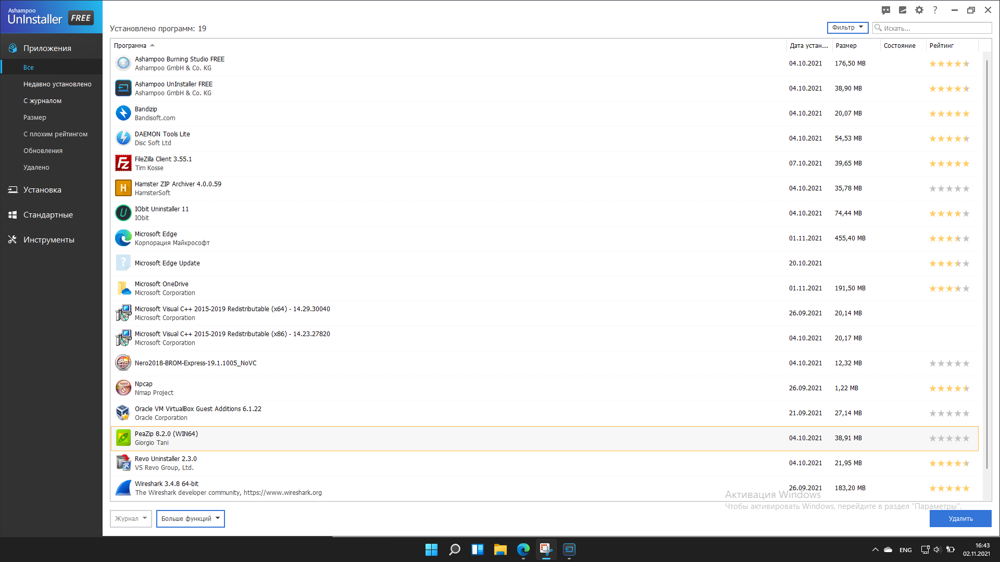
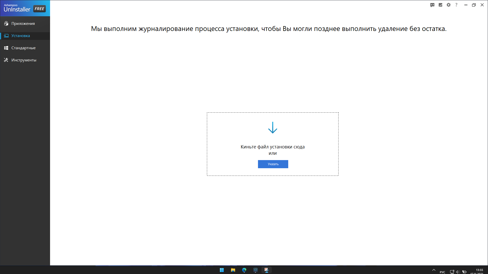
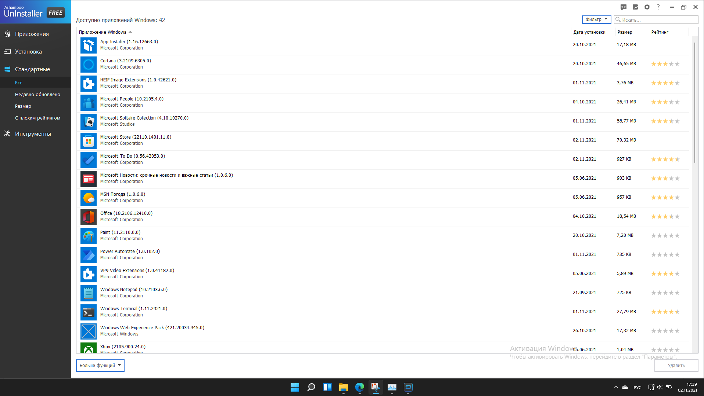
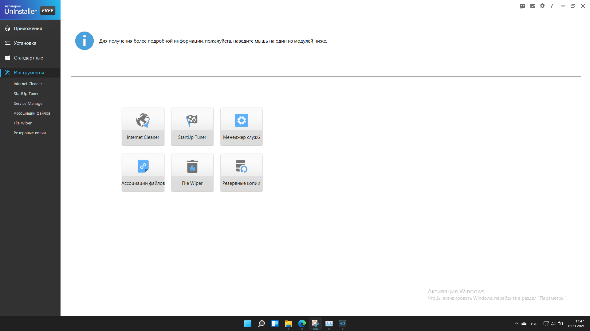
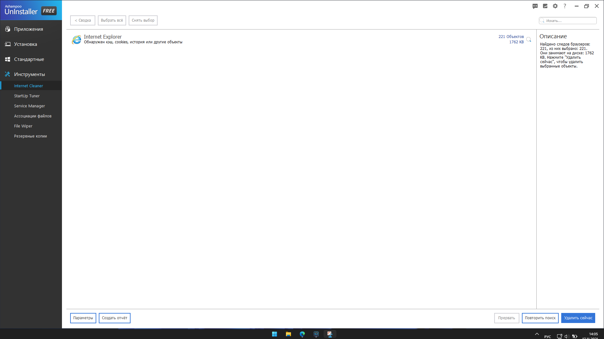
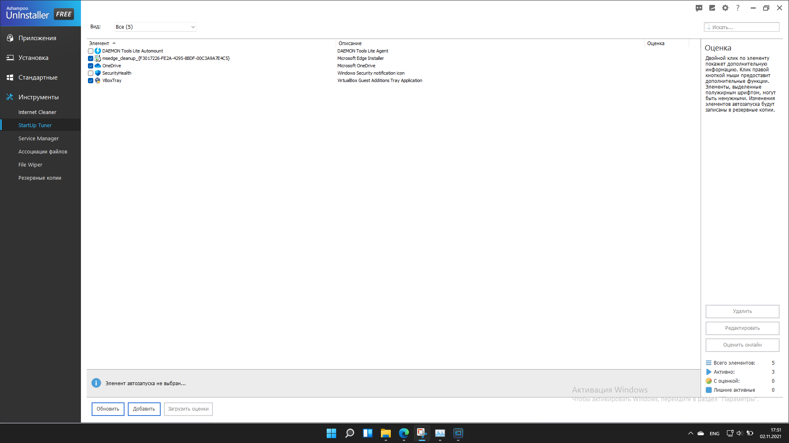
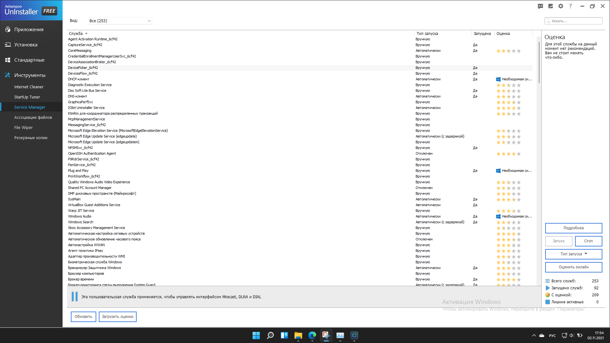
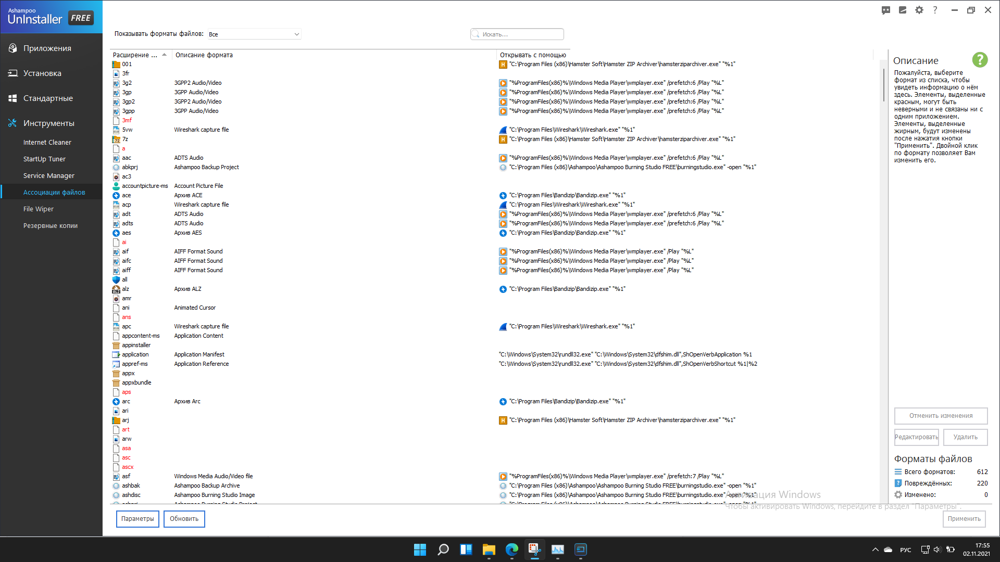
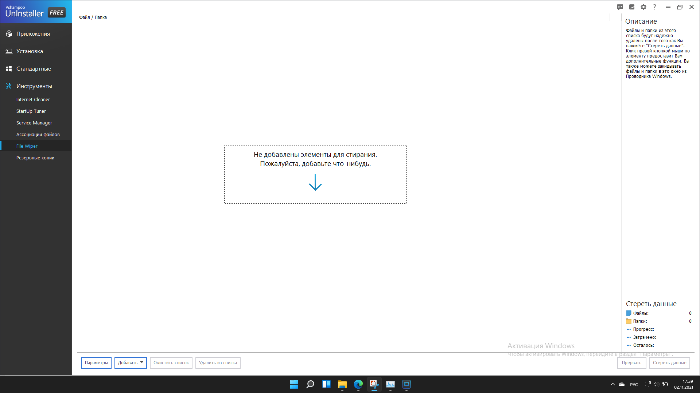

Сайт разработан в рамках дисциплины "Web-технологии в информационных системах"
выполнил Шевелев Артем Юрьевич ИЦТМС-4-1

НИУ МГСУ
Москва 2022
Ashampoo Uninstaller - программное обеспечение для установки, проверки и удаления программ. Ashampoo Uninstaller платная: ее цена составляет 2199 рублей, но существует упрощенная бесплатная версия. Функционал утилиты рассмотрим на примере бесплатной версии.
Ashampoo Uninstaller имеет схожий интерфейс с Iobit Uninstaller. При запуске утилиты пользователь сразу же попадает во вкладку “Приложения”, где, уже в привычном виде, представляется таблица установленных программ с возможностью их удаления. Далее, аналогично Iobit Uninstaller, идут вложенные вкладки, где можно посмотреть таблицы: недавно установленных программ, объемных программ, программ с плохим рейтингом, удаленных этой программой программ и журнала обновлений.
Следующей в меню идет вкладка “Установка”. Программа позволяет drag-and-drop способом открыть установочный файл в программе для последующего журналирования процесса установки.
Следующая вкладка в меню - “Стандартные”. Пользователь наблюдает таблицу всех системных приложений с возможностью их удаления.
Следующий пункт меню - “Инструменты”. В данной вкладке пользователю на выбор предлагаются 6 инструментов.
Ниже показан интерфейс инструмента “Internet Cleaner”. Модуль позволяет удалять следы работы пользователя в интернет-браузере.
Следующий инструмент “SrartUp Tuner”. Инструмент позволяет пользователю управлять автозапуском программ при старте системы.
Далее, инструмент “Service Manager”. Функция данного модуля заключается в управлении службами системы. Пользователь может выбрать тип запуска каждой службы: автоматически, автоматически с задержкой или отключить.
Следующим инструментом является “Ассоциация файлов”. Уникальный инструмент, который позволяет пользователю в удобной форме настроить ассоциацию программного обеспечения с типом обрабатываемых файлов.
Следующий инструмент, который называется “File Wiper” позволяет полностью стереть файлы данных. Последним инструментом является “Резервные копии”, который позволяет пользователю настроить управление файлами резервного копирования (удалять, обновлять).
Программа Ashampoo Uninstaller, на мой взгляд, обладает сбалансированным функционалом. Она включила в себя уникальные функции Revo Uninstaller и Iobit Uninstaller, полного стирания файлов и журналирования процесса установки соответственно. Также Ashampoo Uninstaller имеет свой уникальный инструмент - настройка ассоциации файлов.
Сайт разработан в рамках дисциплины "Web-технологии в информационных системах"
выполнил Шевелев Артем Юрьевич ИЦТМС-4-1
НИУ МГСУ
Москва 2022